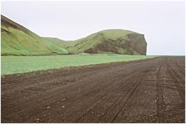
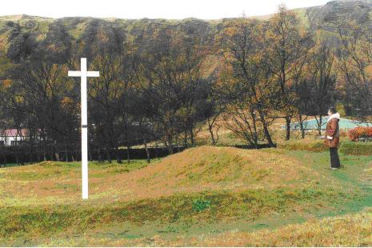
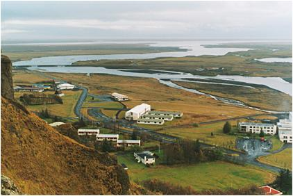
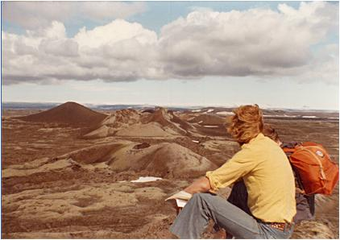

Jeg oplever en lethed i denne skulptur, som nærmer sig det musiske, og det giver mig lyst at gense området, hvor vulkanudbruddet fandt sted for 228 år siden. Sammen med min kone og vores to venner kører vi ad hovedvej 1 fra Reykjavik over Hveragerdi, Selfoss og Vik i Myrdal til Kirkjubæjarklaustur. Undervejs passerer vi lige syd om den gamle skjoldvulkan Eyjafjallajökull, som havde et udbrud i 2010, der lammede flytrafikken i store dele af Europa i en kort periode. Landskabet her er stadig dækket af aske, som har gjort landskabet gråt i gråt, men livet leves videre på gårdene her. Det islandske folk lader sig ikke så nemt skræmme, så havde landet været forladt for længe siden. Vi gør et kort fotostop ved Skogafoss, som er et af Islands smukkeste vandfald. Kort
tid efter Vik kører vi ud på Myrdalssandur og skæver
op mod vulkanen Katla, som ligger og slum-rer under det store
isdække Myrdalsjökull. Katla er en af Islands mest
aktive vulkaner, som i gennem-snit har haft udbrud hvert 80. år
og sidste udbrud var i 1918 for snart 100 år siden. Det
er ikke kun hurricanes, der ofte bærer kvinders navne, men
også vulkaner på Island som Hekla og Katla.
På
Island er der et gammelt folkeeventyr, som fortæller historien
bag Katlas navn. Efter sigende boede der engang en kok, som hed
Katla på et nærliggende kloster (Thykvabæjarklaustur).
Katla besad nogle magiske trusser, som havde den egenskab, at
hun kunne løbe vanvittigt hurtigt og uden at trættes,
og denne egenskab kunne overføres til alle, der fik fat
i disse trusser og tog dem på. Det fristede hyrden Bardi
over evne, og han gjorde sig til trussetyv for at få samlet
sine får i en fart, da det stundede mod vinter. Det skulle
han aldrig have gjort, for da Katla fandt ud af det, fik hun fat
i Bardi og druknede ham i en stor tønde med valle.
Som
vinteren gik, brugte munkene af vallen i tønden, og Katla
vidste, at det kun var et spørgsmål om tid, før
Bardis lig dukkede op i bunden af tønden, og hun ville
blive afsløret. Derfor tog hun sine magiske trusser på
og løb op på Myrdalsjökull og kastede sig selv
i en sprække i isen. Kort tid efter eksploderede Katla og
sendte en kæmpe smeltevandsstrøm - et jøkelløb
(jökulhlaup) i retning af klosteret for at tilintegøre
det. Det er derfor, at vulkanen under Myrdalsjökull hedder
Katla, og spalten, der i ny og næ åbner sig, Kötlugjá
(Katla-spalten). Den store sandur er aflejret af smeltevandet
fra jøkelløbene under Katlas store udbrud
På
sanduren ligger Hjörleifshöfdi, som vi må ud at
kikke nærmere på. Her gik Ingólf Arnarsons
foster-broder Hjörleif i land for at overvintre med sine
keltiske trælle i 874. Trællene gjorde oprør
og dræbte Hjörleif og hans mænd, hvorefter de
flygtede til øerne ud for kysten, som siden blev kaldt
Vestman-naøerne, fordi det var vestmænd (mænd
fra Irland vest for Norge), der slog sig ned her. Men da Ingólf
Arnarson erfarede, hvad der var sket, drog han ud til øerne
og dræbte alle ugernings-mændene der.
Vi
bilder os ind at kunne se, hvor Hjörleif gik i land på
Hjörleifshöfdi, som man dengang kunne sejle helt ind
til og ankre op i lagunen Kerlingarfjördur syd for lavaknolden.
Det har været et indbydende syn fra havet med frodigt græs
til både får og heste. Lagunen blev ødelagt
af et stort jøkelløb i 1179, som flyttede kystlinien
mod syd (Kötlutangi), ligesom det også skete i 1918.
Inspireret af historien om Katla foreslår jeg min vens kone, Elisabeth, at vi løber om kap på sanduren neden for Hjörleifs-höfdi. En overgang frygter jeg, at hun har fået fat i Katlas's magiske trusser, men ved at opbyde alle mine kræfter, vinder jeg ”jøkelløbet” med nogle få tommer. Ildmessen Vi kører videre over Myrdalssandur og mod nord langs floden Kudafljót, som vi krydser og sætter kursen mod Kirkjubæjarklaustur. Da vi nærmer os byen, kan vi se afrundede mosklædte puder af lava, som på kortet betegnes med Nya Eldhraun (nye lavamark), og det er den lavatunge som nærmede sig byen under udbruddet i 1783-84. To århundreder har gjort sin virkning og fået lavaen til at forvitre og dermed givet næring til nyt liv i form af mospuder. Vi
parkerer ved kirken, som ser meget ny ud, men foran kirken er
der et lille anlæg med tørvevolde bevaret fra den
kirke, der lå her under vulkanudbruddet. Bag ved kirken
er der udgravninger i gang af tomten, hvor der lå et gammelt
nonnekloster, som blev bygget af benediktinere omkring år
1200. Det er tydeligt at se grundridset af klosteret i udgravningsfelterne.
Vi går lidt rundt i ruintomten ved den gamle kirke, hvor
der står et kors.

Det
var her Jón Steingrimsson holdt sin berømte Ildmesse
den 20. juli 1783. Udbruddet var begyndt den 8. juni 1783, ved
at der åbnedes en spalte med retningen sydvest/nordøst
i fjeldet mod nord ved den gamle vulkan Laki. Lavaen flød
først fra kraterrækken sydvest for Laki og fulgte
flodlejet Skafta mod syd i retning af lavlandet og senere videre
mod byen og kirken. Lavaen nærmede sig her den 20. juli
kirken efter at have tilintetgjort adskillige gårde og kirker
længere oppe ad flodlejet, og nu stod lavafronten nogle
få hundrede meter fra kirken, hvor præsten samlede
sin menighed til en andagt for at berede dem til døden,
fordi der nu intet sted var, hvortil de kunne flygte for at bjærge
livet. Floderne kogte og luften var fyldt med aske og kvælende
dunster fra lavatungen.
Medens jeg står her på stedet, læser jeg skildringen fra Jón Steingrimsson beretning højt for at lade det fortidige blive til nutid: ” Den 20. juli, som var 5. søndag efter Trinittis, var det samme mørke, med torden , lyn og høje brag og drøn, men da det var vindstille tog jeg og alle, der var bleven tilbage her på Sida, både sognets egne folk og fremmede, som på nogen måde kunne det, til kirke, opfyldte af sorg over, at det rimeligvis var sidste gang, man kunne holde gudstjeneste på det sted, på grund af den fare, der nærmede sig, som allerede havde ødelagt de to nabokirker (Skál og Holt).
Da vi var komne derhen, var luften fyldt af en kvælende varme og tåge, der stammede fra lavaen, som nu strømmede frem ned ad flodens leje (Skaftafloden). Man kunne knap skimte kirken fra klosterets dør. Det tordnede og lynede således, at kirken til tider blev helt oplyst af himmelens flammer, og dens klokker gav genlyd af tordenskraldene, mens jorden gik i bølger op og ned. Den store overhængende fare lærte både mig og andre at bede til Gud med den rette andagt, at han af hele sin nåde ikke ville lade os og dette sit hus gå til grunde. Og hans almagt åbenbarede sig således overfor vor svaghed, at både jeg og alle andre, som var til stede, var fuldstændig uden frygt inde i kirken. Ingen viste noget tegn til at gå ud eller ville flygte bort derfra, mens gudstjenesten stod på, og den tog mig dog længere tid, end jeg plejede at anvende dertil; denne gang forekom det mig, at tiden til at tale med Gud ikke var for lang.
Hele menigheden bad Gud om nåde, men uden frygt for, hvad der ville komme, og med ønsket om, at hans vilje måtte ske. Jeg kan ikke sige andet, end at hvert menneske inde i kirken var rede til at dø, hvis det havde været Herrens vilje, og ingen ville gå bort derfra, selv om faren var bleven større, thi nu kendte vi ikke længer noget sted, som vi vidste med sikkerhed, at det ville være muligt at redde os til. Jeg vil imidlertid ikke udbrede mig mere derom, for ingen skal kunne sige, at jeg søger at skaffe mig eller andre lovprisning af mennesker. Ikke os, men dit hellige navn, Herre, giver vi æren! Lad os hellere se på, hvad der skete her ved Guds almagt og vilje.
Da gudstjenesten var forbi, og vi begyndte at undersøge, hvilke fremskridt lavastrømmen havde gjort under gudstjenesten, viste det sig, at den ikke var gået en håndsbred videre, men at den i denne tid på et sted, hvor flodlejet dog skrånede nedad, havde opbygget sig en mægtig lavahøj, omtrent 70 favne i bredden, 20 favne i dybden, hvilken vil være synlig der til verdens ende, hvis ingen anden ændring sker der på stedet. Floderne Hóltsá og Fjadará havde banet sig vej over de dæmninger, som den nye lava havde dannet, og med rivende fart og mægtige bølger brød de ind over ilden og slukkede den. Det kogte og bruste i flodlejet, og vandene strømmede i et mægtigt fald ned over den føromtalte sammendyngede lava. Vandmængden var så stor, at floder der over for klosteret slet ikke kunne passeres hele dagen.” oversat fra Eldritid af Jón Steingrimsson i ÆviSagan, og önnur rit. Udgivet af Kristján Albertsson. Helgafell, Reykjabik 1973. Selv
om den gode og gudfrygtige provst troede på, at vulkanudbruddet
var Guds straf over et ulydigt folk, kunne kan ganske nøjagtigt
beskrive den naturvidenskabelige forklaring på, at lavastrømmen
var standset og dynget op få hundrede meter før kirken.
Han er også bevidst om, at eftertiden vil kunne studere
fænomenet, hvis ikke der sker andre ændringer på
stedet.
Det utrolige er, at forholdene i sognet blev mere tålelige
efter Ildmessen, selvom vulkanudbruddet fortsatte med at spy ild
aske og lava helt frem til den 7. februar 1784. Der skete det,
at spalten nord-øst for Laki åbnede sig den 29. juli
og sendte en ny strøm af lava mod syd gennem flodlejet
Hverfisfljót. Denne lavatunge nåede i løbet
af august helt ned i lavlandet nordøst for Kirkjubæjar-klaustur
og kan nu lokaliseres på kortet som Brunahraun.
Den 21. september før gudstjenesten i kirken bemærker
Jón Steingrimsson for første gang siden udbruddets
start en regnbue på himlen. Det gør ham utrolig glad,
for den gudfrygtige mand ved, at Gud gav Noa regnbuen som tegn
på en ny pagt mellem Gud og menneske, hvor han lover, at
han aldrig mere vil udslette menneskeheden. Regnbuen tolker provsten
derfor som starten til afslutnin-gen af udbruddet, som heller
ikke efterfølgende generede sognets indbyggere i samme
grad som før.
Men
i sognet døde 1/3 af indbyggerne - herunder provstens egen
kone, og for Island som helhed betød eftervirkningerne
af udbruddet døden for ca. 10.000 mennesker, ca. en femtedel
af Islands indbyggertal på ca. 50.000 på det tidspunkt.
Sekshundrede kvadratkilometer var blevet dækket af lava,
svarende til et rumindhold på 14 kubikkilometer. Det blev
bidende koldt i vinteren 1783/84 og de følgende år,
og det udløste en hungersnød på Island, som
slog fæ og folk ihjel. Over 80% af fårene døde
og næsten det samme gjaldt for hestebestanden. Selv på
fastlandet hang der over Europa en ”tør tåge”
det meste af sommeren og efteråret 1783, og vinteren 1783/84
blev usædvanlig hård med middeltemperaturer væsentligt
lavere end normalt. Benjamin Franklin var den første, som
satte dette i forbindelse med vulkanudbruddet på Island.
Således kan Lakagigar have haft en finger med i spillet
på at udløse den franske revolution i 1789.
Så udbruddet i Eyjafjallajökull var blot en lille påmindelse
om, hvad der kan ske fremover. For blot at sætte dette i
perspektiv kan jeg nævne, at en endnu større spalte
end Laki-spalten, Eldgjá, åbnedes på Island
i 934-940 og producerede aske og lava i 6 år. Det er i den
sydlige ende af denne spalte, at Katla ligger og slumrer under
Myrdalsjökull.
Da 1700-tallet i forvejen var bidende koldt på grund af
”den lille istid”, var det hårdt at være
islænding, men tilbuddet fra Danmark om at blive overflyttet
til Jylland for at dyrke kartofler på den jyske hede fristede
ikke islændingene, som blev og kæmpede videre. Som
en belønning for kampmodet lempedes handelsmonopolet i
1787, som Chr. IV havde indført i 1602.
 Kirkjubæjarklaustur set fra fjeldet over byen. Den gamle kirkes placering
ses ved træerne foran den nye kirke øverst til venstre i billedet.
Turist ved Lakagigar
Det er muligt at køre til Lakagigar i landrover eller tage en guidet tur med bus fra Skaftafell eller Kirkjubæjarklaustur. Har man certificat til et ultralight fly, kan man vælge at cirkle over det fantastiske område med de mosklædte, farverige vulkaner på rad og række. Jeg har på nettet fundet dette klip af en lille flyvetur over Lakagigar. Hvis du lyst til en tur for at se området fra oven - så klik på linket: https://www.youtube.com/watch?v=GBccLBvYtao
I 1975 var jeg selv på en tur i lejet landrover ind til Lakagigar sammen med to af mine venner. Vi besteg Laki og nød udsigten både mod sydvest og nordøst ind mod Vatnajökull, hvor de over 100 kratere lå som perler på en snor. På toppen af Laki kunne man se, at fjeldet, som består af den glasagtige moberg, var skåret igennem af spalten, som var det en kniv, der havde skåret sig ned i en sprød marengskage. Vi vandrede området tyndt, og det jeg husker bedst, er den fantastiske stilhed, der herskede her langt væk fra verdens larm.

Stilhed
er blevet så sjælden i vor kultur, at man kan gå
hen og blive helt bange for den. På Island er hele det indre
højland fyldt med en forunderlig stilhed på et areal,
der er større end Danmark to gange. Her er der mulighed
for at møde sig selv på en helt ny måde, hvis
man har lyst til det. Det er både skræmmende og fascinerende
på en gang. Skræmmende fordi man her er konfronteret
med sin nøgne eksistens uden den fernis, som placeringen
i det sociale hierarki kan give - fascinerende fordi der åbner
sig et helt andet værens-aspekt i samklang med naturen.
Man kan lære lidt af Jón Steingrimsson om den uendelige
resignation og evnen til at gribe livet i øjeblikket.
Vi slog lejr i en lille oase, Blágil, i nærheden af Lakagigar. Her sprang den reneste kilde ud under lavaen med krystalklart vand, som vi kunne lægge os ned og drikke af og hvile i det saftigtgrønne græs omkring kilden til lyden af den rislende stilhed i ødemarken. Her fik vi en lille fornemmelse af, hvad det ville sige at være Fjeld Eyvind på en god dag. Copyright Morten Stender << retur |